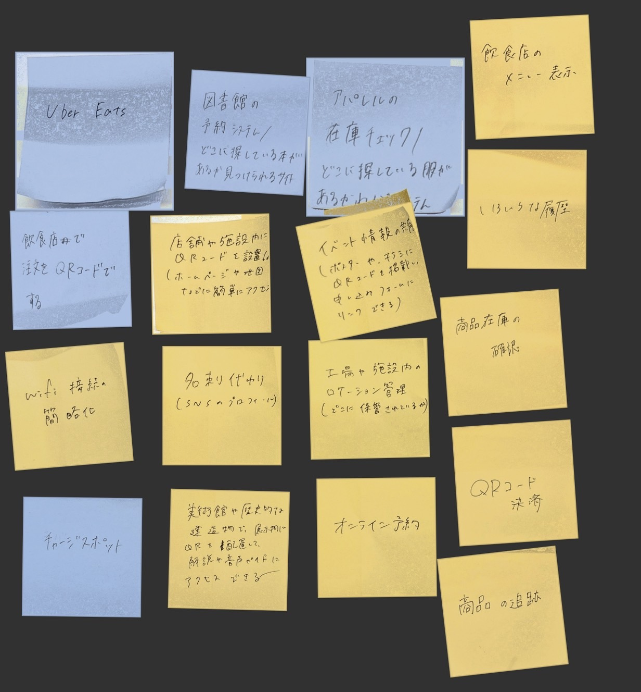

lotについて
loTとは、「Internet of Things」の略で「モノのインターネット」を意味します。
私たちの周囲にあるモノがインターネットにつながる仕組みのことです。
デジタル化が進んだ昨今、家電やカーナビといったモノをインターネットに通信する技術であるloTは高い注目を集めています。
IoT(遠隔操作)で何ができそうか？グループワークした内容

グループでは、lotを使って何かものを動かすという考え方ではなく、QRコードを使って出来る事を考えてしまった
IoT(遠隔操作)で何ができそうか？自分で考えたアイディア
遠隔操作ガーデニングシステム
アイディア： スマホから水やり・日照・温度管理ができる家庭菜園システム。
特徴*土壌の水分量をセンサーで測定。。必要なときだけ自動で水やり。スマホで温度や日当たりをチェックして、遮光シートを開閉できる。
活用例： 忙しい人や旅行中の人でも植物を元気に育てられる！
実験した動画
⬇️ lotを使って、遠隔でLEDを点滅させている様子